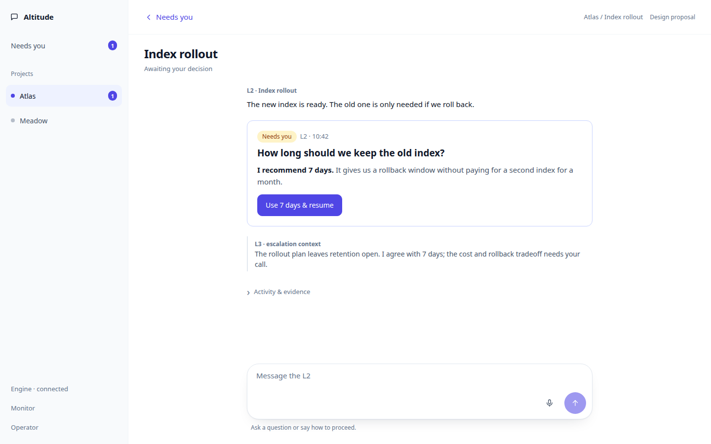
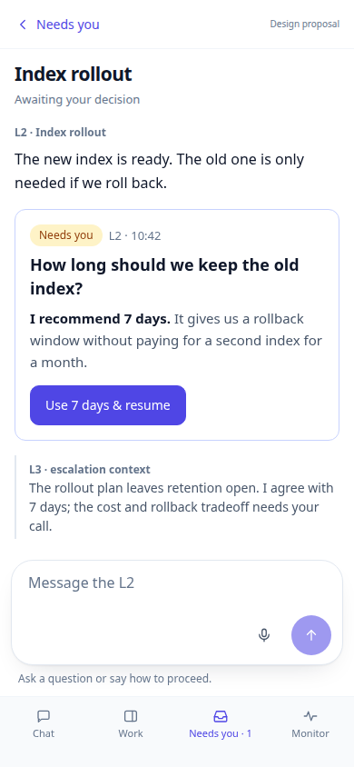

A question opens a conversation.
Accept a clear recommendation from Needs you, or open the owning L2 chat to discuss it. A follow-up keeps the question open. A clear typed decision is enough to proceed.
Read the design and architecture proposal · View the captured boards · All design boards
Try the flow
Fictional prototype. No API, microphone or provider calls. Start at Needs you, open the chat and send one of the example messages below.
Scripted messages: “Could we roll back after day seven?”, “14 days”, “Maybe two weeks, but I’m unsure about cost.” and “Keep it for 14 days, then delete it. Go ahead.” Other input stays editable with a prototype hint. The live product will use the owning L2’s judgment. Choosing a scene resets this fictional example; voice simulates the fourteen-day answer.
The recommended design
- One question and recommendation component in Needs you and the L2 chat.
- Open the durable question with surrounding discussion, including L3’s escalation context.
- User and L2 messages stay prominent; activity and evidence expand on demand.
- Discussion can wake the L2 without accepting the recommendation.
- A recorded answer clears Needs you. Work resumes through the existing provider conversation.
Remove the separate decision page, recipient selector, optional note form and mirrored follow-up thread. Keep one pending question on the task, independently of whether its worker is answering or waiting.
Question, in context


Every interaction state
Each link opens a real rendered board. The same state inventory is walked on phone and desktop.
| State | Open board |
|---|---|
| Loading Needs you | Desktop · Phone |
| Needs you read failed | Desktop · Phone |
| Cached Needs you, offline | Desktop · Phone |
| Needs you during discussion | Desktop · Phone |
| Loading the question | Desktop · Phone |
| Read failed, retry | Desktop · Phone |
| Offline with cached discussion | Desktop · Phone |
| Recording quick acceptance | Desktop · Phone |
| Acceptance failed | Desktop · Phone |
| Acceptance denied | Desktop · Phone |
| Sending a message | Desktop · Phone |
| Message failed, draft retained | Desktop · Phone |
| Message queued, L2 unavailable | Desktop · Phone |
| L2 could not answer | Desktop · Phone |
| Decision recorded, waiting to resume | Desktop · Phone |
| Question without a recommendation | Desktop · Phone |
| A simple typed answer | Desktop · Phone |
| A reply arrives below the question | Desktop · Phone |
| A newer question replaced this one | Desktop · Phone |
| Question unavailable | Desktop · Phone |
| Task archived, read only | Desktop · Phone |
| Listening | Desktop · Phone |
| Transcribing | Desktop · Phone |
| Dictation in editable draft | Desktop · Phone |
| Microphone denied | Desktop · Phone |
| Transcription failed | Desktop · Phone |
| Voice unavailable | Desktop · Phone |
Design checkpoint
Approve this direction for implementation, or identify what should change. Production implementation waits for that decision; the resulting PR also stays held for the operator’s merge review.